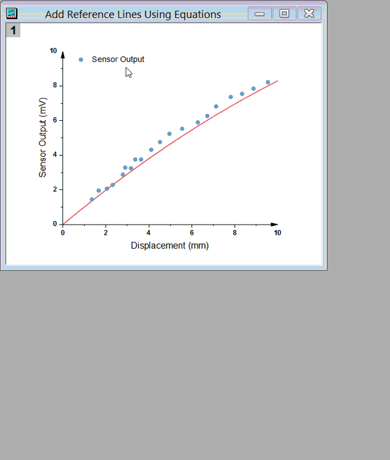

FAQ-153 凡例をカスタマイズするには?
Customize-Legend
最終更新日: 2019/5/15
凡例のテキスト部分の編集
凡例のテキストは、デフォルトで列コメントを表示します。任意の文字を入力するか、データプロットの凡例を更新 ダイアログを使用して、ロングネーム、単位、ユーザ定義パラメータ、ワークシート名などの他の列情報を使用することができます。
- 凡例上で右クリックして凡例：凡例を更新を選択します。またはメニューでグラフ操作：凡例：凡例を更新と操作します。
- 凡例の自動更新モードのドロップダウンリストでシンタックスを変更します。凡例のテキストの編集については、こちらの凡例を編集するには？をご覧ください。
- 「カスタム」を選択してより多くのシンタックスを表示し、文字テキストとシンタックスを組み合わせることもできます。
Note:
- このような操作は、作図の詳細-ページ属性ダイアログの凡例/タイトルタブにも存在します。フォーマット：作図の詳細（ページ属性）を選択し、作図の詳細-ページ属性ダイアログボックスを開きます。
- テキストの色がプロットの色になるようにするには、凡例を右クリックし、凡例：プロットに従ったテキスト色のコンテキストメニューを選択します。
- 凡例設定は、将来の使用のためにグラフテンプレートに保存することができます。
 |
カスタムの凡例テキストを強制的に改行するには、%(CRLF)を使用します。
- legendupdateダイアログボックスで、凡例の自動更新モードをカスタムにして、フォーマット文字列として"%(CRLF)"を入力します。
- 作図の詳細（ページ属性）でも同じ操作が可能です。凡例/タイトルタブを開き、%(1), %(2)の解釈モードをカスタムにして、カスタム凡例のテキストを入力して、テキストを改行する位置に
"％（CRLF）"を含めます。
|
凡例のシンボル部分の編集
シンボルサイズの調整
デフォルトでは、凡例のシンボル部分はプロットサイズに従います。プロット内のシンボルが小さすぎるか線の太さが小さすぎると、その凡例を読むのは難しいです。または、列/棒グラフ/領域プロットの場合、Originは常に凡例に固定サイズの矩形ブロックを作成します。ブロックの幅や高さを調整して見栄えを良くすることができます。これらすべてを行うには、
- Origin 2018以降では、凡例をダブルクリックするか、凡例を右クリックしてプロパティのコンテキストメニューを選択します。スケールを調整するために、シンボルタブ
に移動します。

- Note： シンボルタブでは、線+シンボルの凡例をダンベルの形（シンボル-線-シンボル）で表示し、シンボルと線の間隔を調整することもできます。
パターンブロックの幅とパターンブロックの高さボックスを使用して、ブロックスタイルの凡例シンボル（横棒/縦棒など）の幅と高さを調整できますが、100を超える数は使用できません。
- Origin 2017以前では、凡例置換表記法でシンボルサイズを調整することができます
新しいシンボルの作成
- Origin 2018以降では、凡例をダブルクリックするか、凡例を右クリックしてコンテキストメニューのプロパティからテキストオブジェクト
- Legend ダイアログを開きます。テキストタブで、凡例シンボルの追加ボタンをクリックして凡例にシンボルをデザインします。
線、矢印、シンボル、線+シンボルの凡例シンボルをサポートします。
- 
- Origin 2017 以前は、凡例の独立したシンボル
セクションを参照して、マニュアル的に作成する必要がありました。
凡例のレイアウト編集
凡例を構成する方法につきましては、いくつかの新しい改善が追加されました。必要なバージョンは項目の最後に記載しています。
- 凡例を反転するには、凡例を右クリックし、凡例：逆順を選択します。(Origin 2015)
- 凡例を水平に整列するには、凡例を右クリックし、凡例：水平に揃えるを選択します。(Origin 2016)
- 複数の列に凡例を配置するには、Ctrlキーを押しながら凡例の境界線をドラッグします。(Origin 2015)
- 白い凡例の余白を追加するには、凡例の罫線をダブルボーダーが表示されるまでクリックします。境界線をドラッグします。
- 項目間のスペースを調整するには、凡例を右クリックしてプロパティを選択します。行間隔を調整します（Origin
2016）
キーワード:データセット、シンボル、特別、ini、凡例の長さ、凡例の幅、凡例のシンボルサイズ、凡例項目の追加
詳細は ユーザガイドをご覧ください。